Task 04. Test Cluseter
Task 04에서는 설정은 변경 한 Cluster를 테스트하여 시나리오에 따라 정상 동작 하는지 확인합니다.
- 첫번째 시나리오는 prihana의 DB를 crash 했을 때, Cluster가 어떻게 동작 하는지 확인 합니다.
-
Session Manager를 통해 prihana에 접속합니다.
-
AWS Management Console에 로그인 한 뒤 EC2 Instance Console에 접속 합니다.
-
HANA-HDB-Primary 인스턴스를 선택하고, Action을 선택하고, Connect을 선택 합니다.

-
Session Manager 를 선택하고, Connect 버튼을 누릅니다.

-
hdbadm 유저로 스위치 합니다. HDB DB를 Kill 합니다.
sudo su - hdbadm HDB kill -9 exit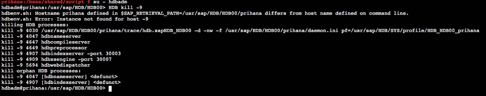
- root 유저로 스위치 합니다. Cluster 상태를 모니터링 합니다. 리소스 상태가 어떻게 변했는지 확인 합니다.
sudo su - crm_mon -rfn1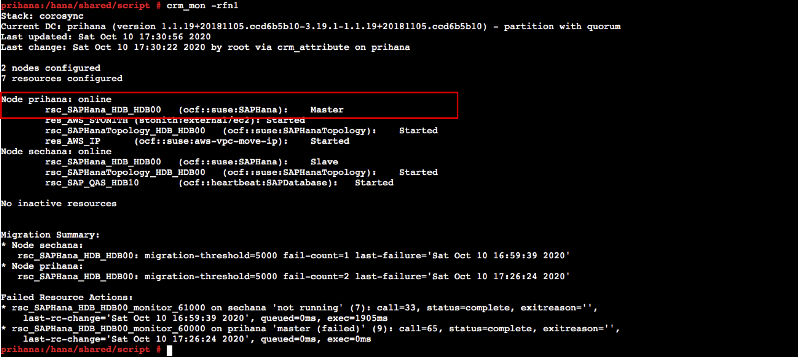
- HSR 상태를 모니터링 합니다. sechana의 status가 SOK 상태인지 확인 합니다.
SAPHanaSR-showAttr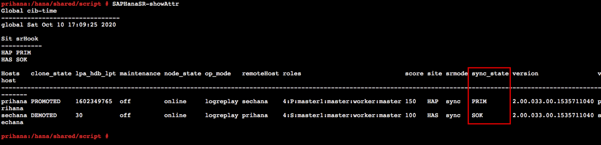
- OS가 정상 상태이고, PREFER_SITE_TAKEOVER 옵션을 false로 변경 하였기 때문에 Take over 되지 않고, prihana에서 DB가 재 기동 되었습니다.
-
-
두번째 시나리오는 prihana의 OS를 crash 했을 때, Cluster가 어떻게 동작 하는지 확인 합니다.
- prihana의 OS를 fast reboot 합니다.
sudo su - echo 'b' > /proc/sysrq-trigger exit-
Session Manager를 통해 sechana에 접속합니다.
- AWS Management Console에 로그인 한 뒤 EC2 Instance Console에 접속 합니다.
- HANA-HDB-Secondary 인스턴스를 선택하고, Action을 선택하고, Connect을 선택 합니다.

- Session Manager 를 선택하고, Connect 버튼을 누릅니다.
-
sechana에서 Cluster 상태를 모니터링 합니다. 리소스 상태가 어떻게 변했는지 확인 합니다.
sudo su - crm_mon -rfn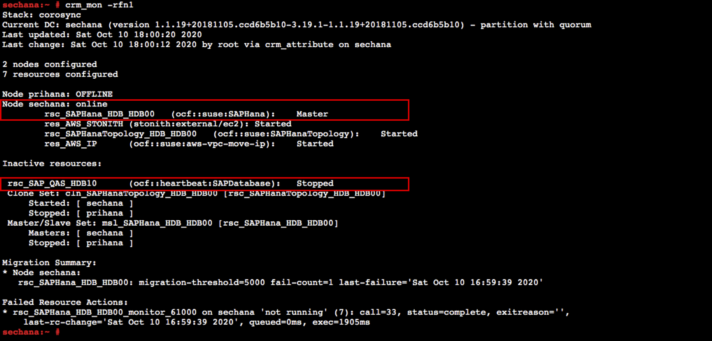
- prihana 시스템이 Down 되었기 때문에, 정상적으로 sechana로 Take Over 되었습니다. 정상적인 서비스를 위해 QAS 시스템을 내리고, 메모리도 정상 서비스 할 수 있도록 Memory limit 설정을 해제 하였습니다.
sudo su - hdbadm cat /usr/sap/HDB/SYS/global/hdb/custom/config/global.ini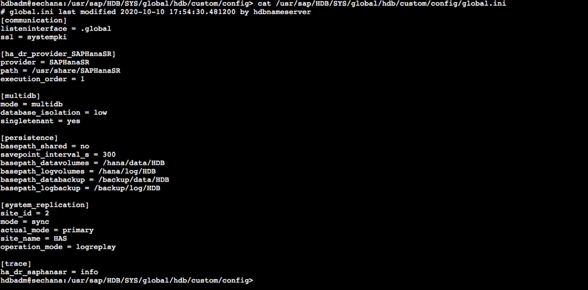
-
prihana 원복 합니다. 그리고 prihana가 정상이면, QAS 시스템 사용을 위해 Take Back을 수행합니다. sechana의 HDB의 global.ini 설정을 원복합니다.
-
prihana 인스턴스를 Start 시킵니다.
- AWS Management Console에 로그인 한 뒤 EC2 Instance Console에 접속 합니다.
- HANA-HDB-Primary 인스턴스를 선택하고, Action 을 선택하고, Instance state 에서 Start Instance 를 선택 합니다. 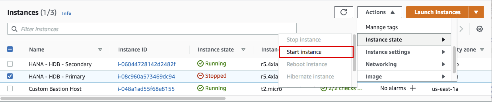
-
sechana에서 root 유저로 스위치 후, prihana 인스턴스가 정상적으로 기동 후 HDB HANA 리소스가 Slave 로 보이는지 확인합니다.
sudo su - crm_mon -rfn1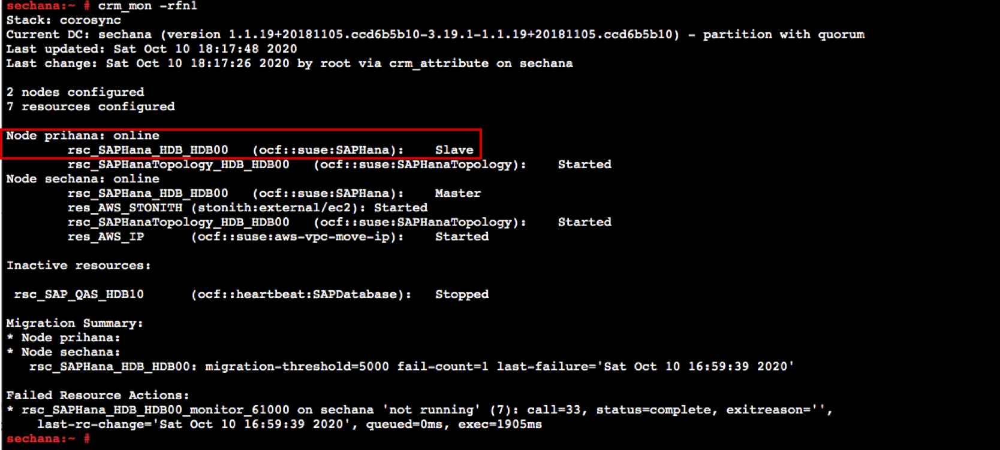
- sechana에서, HSR 상태를 체크하여 prihana status가 SOK 인지 확인 합니다.
SAPHanaSR-showAttr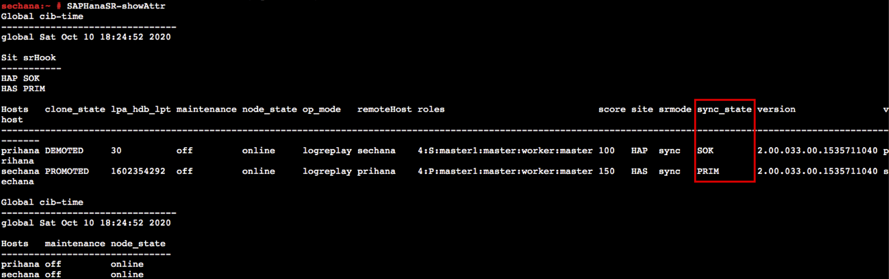
- sechana에서, prihana로 Take Back을 수행합니다. node를 standby 로 변경하여 리소스 모두 prihana로 옮깁니다.
crm node standby sechana- prihana의 HDB HANA 리소스가 Master 로 전환되었는지 확인합니다.
crm_mon -rfn1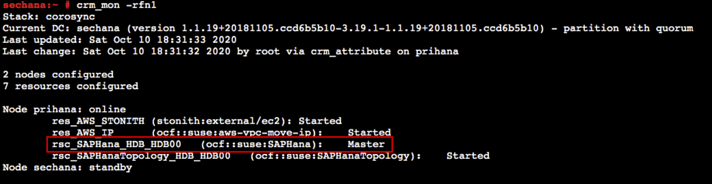
- sechana에서 hdbadm 유저로 스위치 후, VI 편집기를 이용하여 global.ini 원복 합니다.
sudo su - hdbadm vi /usr/sap/HDB/SYS/global/hdb/custom/config/global.ini [system_replication] ... preload_column_tables = false #Add-on [memorymanager] global_allocation_limit = 24576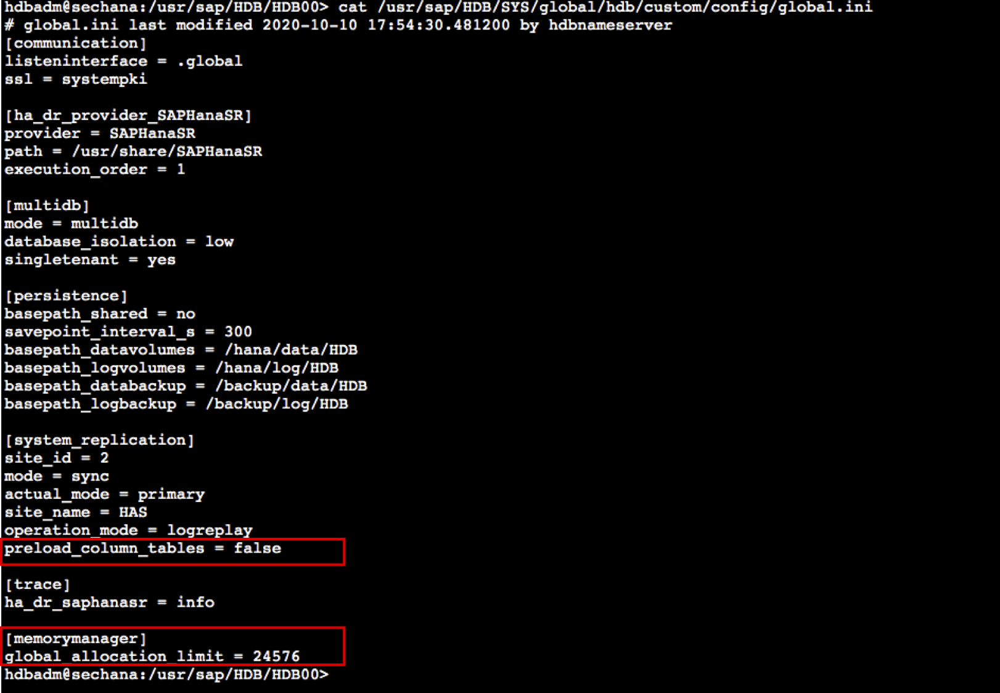
- sechana에서 root 유저로 스위치 후, node를 online 시킵니다.
sudo su - crm node online sechana- sechana의 HDB HANA 리소스가 Slave 로 전환되고, QAS HANA 리소스가 Started 되었는지 확인합니다.
crm_mon -rfn1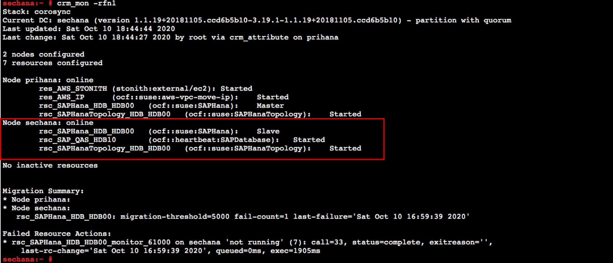
- HSR 상태를 체크하여 sechana status가 SOK 인지 확인 합니다.
SAPHanaSR-showAttr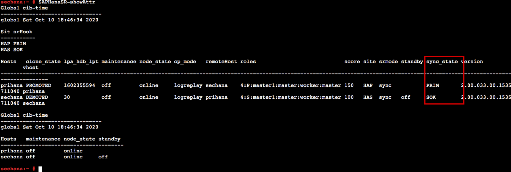
-